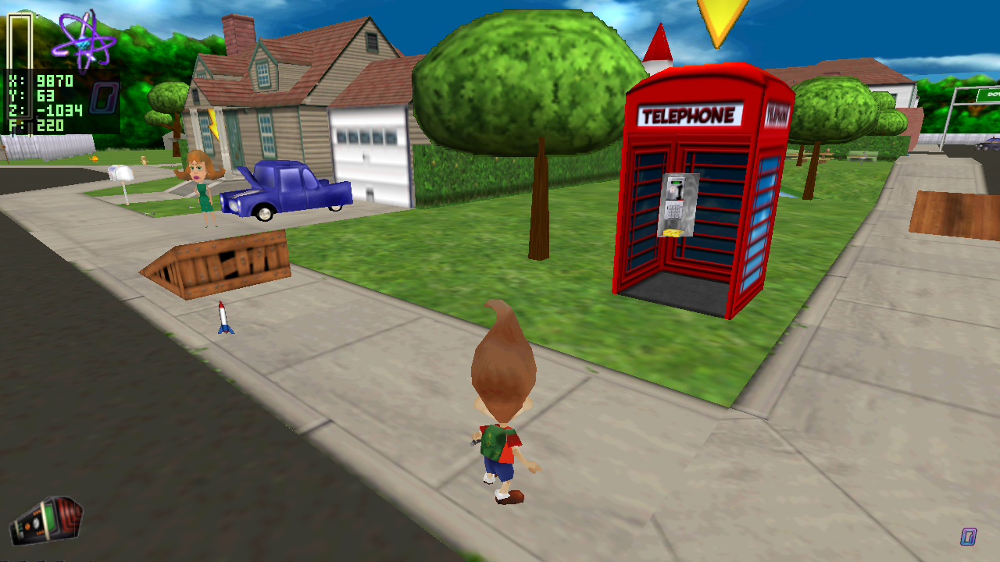
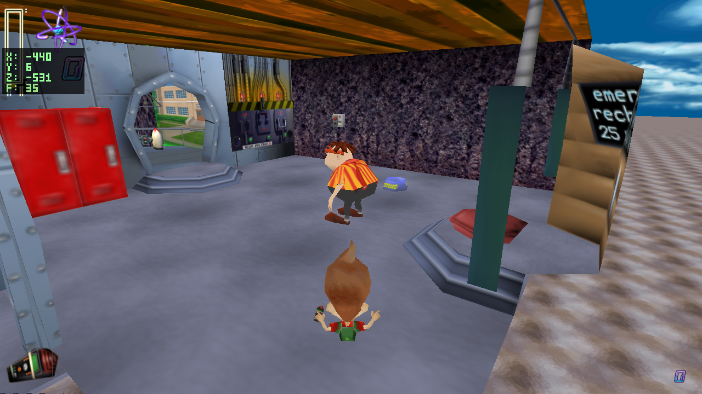
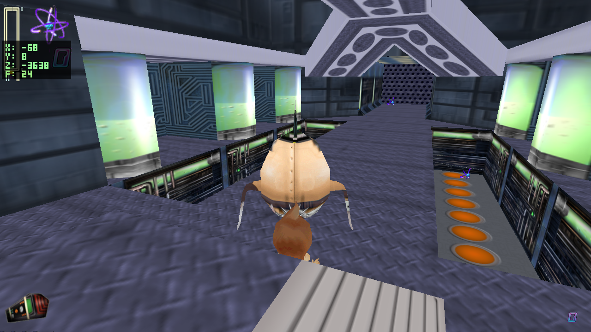
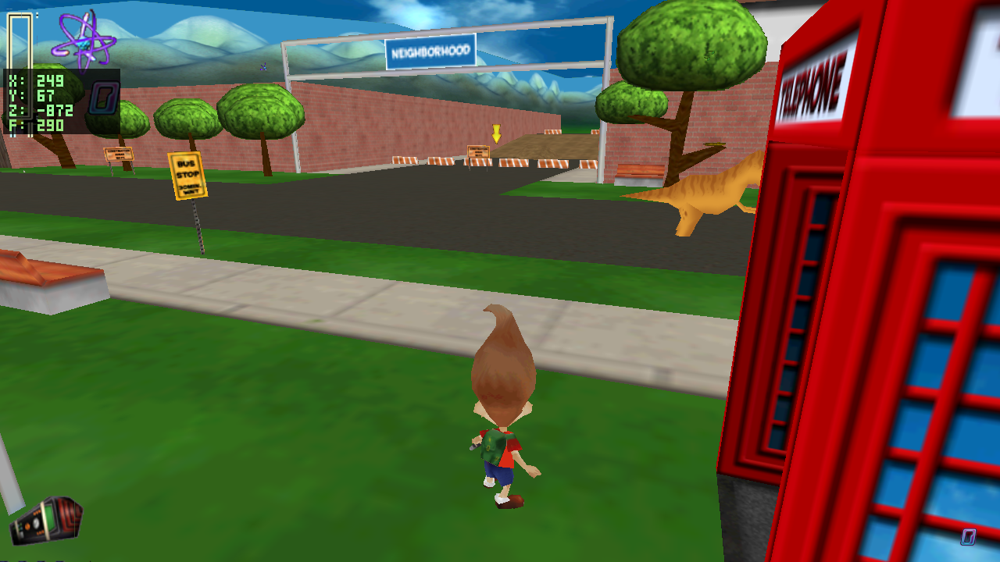
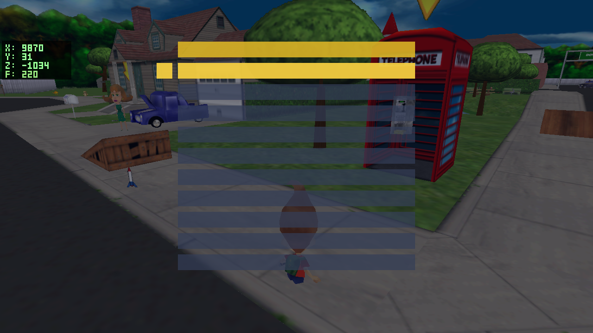

JN Engine native port: N1-N5 update
Updated 2026-06-23. This page summarizes what the native port waves tried to accomplish, what landed, what today's rocket/baseball pass corrected, and where the project moves next.
What changed today
The recent N1-N5 work made the native C engine the product: shared behavior bases, enemies, tools/projectiles, rideable vehicles, and the first game-flow layer. Today's work was a focused N3/N4 cleanup pass around the rideable rocket sandbox and baseball projectile visuals.
FIXEDRocket sandbox now uses one non-solid rideable rocket, Jimmy stays visible/seated, the thrown baseball uses the retained baseball sprite, and rocket controls are no longer inverted.
NEXTEngine sound, C3DFireStrato exhaust, the nose-horizontal-at-rest cosmetic, remaining enemy roster, and deeper game-flow polish are still ahead.

3ROC rocket, now using the corrected Strato texture.Wave Status
| Wave | Purpose | Status after N1-N5 | What it unblocks |
|---|---|---|---|
| N1 | Base behavior framework. | Shared behavior_base, movement_base, behavior_ai, trigger/pickup overlap, mutable runtime flags. Carl's walker path now proves the AI base. |
Lets later classes stay thin instead of each one reimplementing lifecycle, movement, or AI plumbing. |
| N2 | Enemies and AI. | Yokian soldier/guard/spy subset seeks, attacks, takes baseball hits, and uses player/enemy health through gamestate and behavior_projectile. |
Combat targets and enemy-side projectile users. |
| N3 | Player combat and pickups. | Baseball tool gating, pickup grants, shared player projectile, balloon pop/release behavior, and projectile visual fix for PROJ. |
Player abilities that can interact with enemies and level objects. |
| N4 | Vehicles. | Player boards and flies C3DRocketShip; AI bus/SUV/sailboat-style traffic rides N1 patrol primitives. Today's fix made the rocket usable rather than inverted. |
Rides, vehicle-specific effects, and later level sequences that depend on vehicle state. |
| N5 | Game-flow and controllers. | CTaskList loader, CJimmyGame lives/restart/objective bridge, data-driven level table, cutscene-camera registration, and a placeholder menu shell. |
Campaign progression, menus, cutscene activation, and real objective tracking. |
Screenshots


behavior_ai. Retaken with noclip-style placement at Carl's runtime position so the proof subject is in frame.
yoksol area; the seek/attack/defeat proof is from the headless combat log path.


Today's Focus
What we tried to accomplish
The goal was to make the N4 rideable rocket usable as a sandbox verification tool while preserving the decomp-grounded N1-N5 behavior structure. That touched N4 directly, but also exposed N3 projectile visuals because the baseball throw path was now important for testing combat and balloons.
| Issue found | Root cause | Resolution |
|---|---|---|
| Walking near the sandbox rocket pushed Jimmy underground. | The spawned/relocated rocket was still solid and overlapped the player's AABB vertically. | Use one authored rocket where possible, bring it to the player once, seat it on the ground, and make it non-solid in sandbox mode. |
Two rockets appeared in levels that already had an authored 3ROC. |
The sandbox helper spawned an extra rocket instead of reusing the level's rocket. | Prefer the authored rocket. Only spawn a stand-in in the fallback case where a level has no rocket. |
| Jimmy disappeared or looked wrong while riding. | The original mount path hid or overrode the player too aggressively. | Keep Jimmy visible, inert, and snapped to a seat offset on the rocket. |
| Thrown baseball had no visible sprite. | PROJ had gameplay behavior but no visual resolver entry. |
Map PROJ to the retained baseball sprite from C3DBaseball / RetainedSprites chunk ball0000. |
| Rocket flight controls were inverted and difficult to fly. | The rocket intentionally mapped Up/Down pitch opposite to player expectation and used the opposite yaw sign from tank-turn movement. | Controls are now direct: Up/W nose up, Down/S nose down, Left/A turn left, Right/D turn right. |
Rocket Diagnostics


entity_visual path.
Validation
Today's control and report work was checked with the same native/web path used by the waves:
makecompleted successfully; the SDL_mixer archive warning is the existing link warning.make webcompleted successfully../tools/deploy_wasm.shpublished the live web build:jnengine.f669aad8.js, assets9ea0c7d8.- Headless screenshot hooks produced the N1, N2, N3, N4, and N5 images shown on this page.
Where We Move Next
Immediate rocket polish
- Wire the deferred engine audio: loop
rocket_flywhile the engine is on, firerocket_blastonce on ignition, halt immediately on brake/dismount. - Add the
C3DFireStratoexhaust effect at the tail while thrusting. - Fix the rocket's nose-horizontal rest pose without breaking the new direct flight controls.
Broader N1-N5 follow-up
- Expand N2 beyond the Yokian subset: Digger, Tank, Tesla, Harrier, turrets, mines, and laser triggers.
- Keep using N3's projectile/tool path as the test surface for enemies and balloons.
- Turn the N5 menu shell into a readable menu/HUD flow and connect real trigger-driven cutscene activation.
- Ground-truth progress/task gates before enabling full
RequiredLevel/ExactLevelcampaign visibility behavior.
Source references: docs/native_port_plan.md, docs/PROJECT_HISTORY.md, docs/decomp/C3DRocketShip.md, docs/decomp/C3DBaseball.md, and the current native runtime screenshots in this folder.